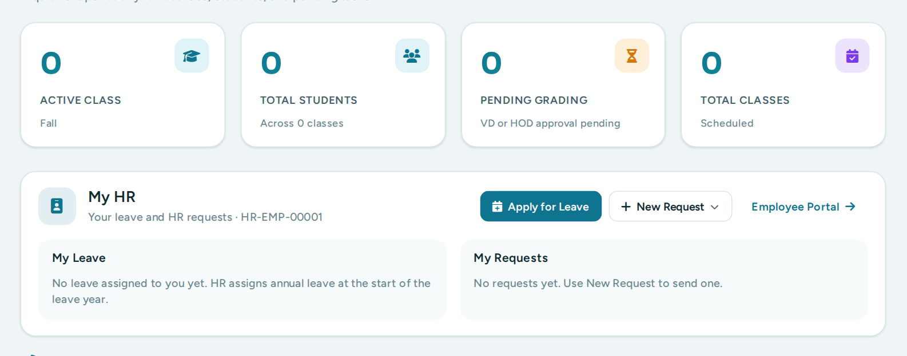
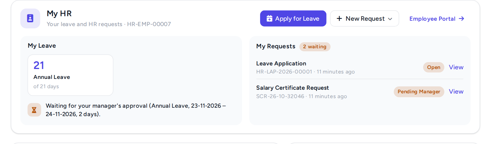
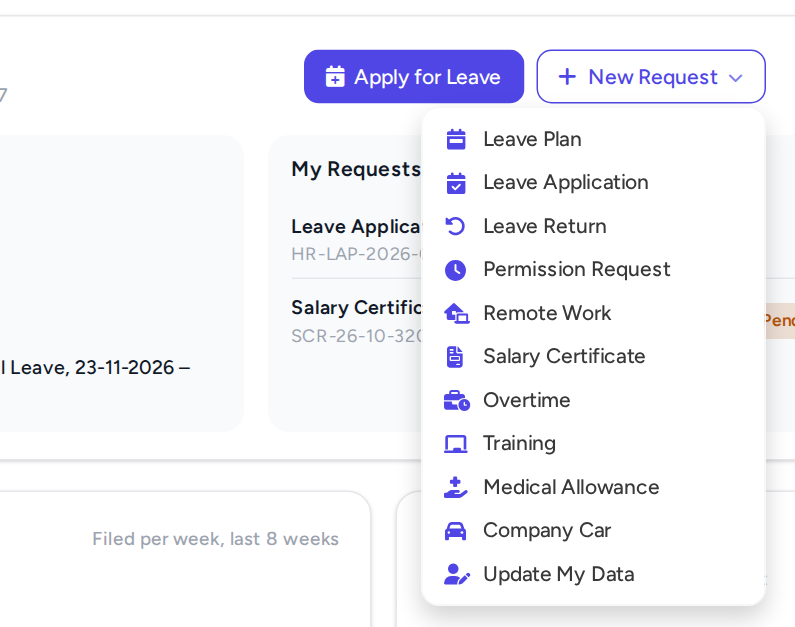
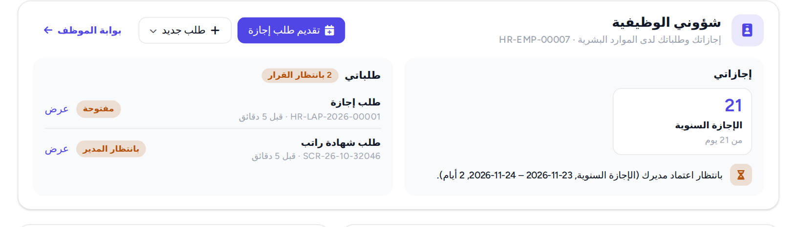

Al-Riyada College for Health Sciences · Medical HRMS
Round 3: What's New and How to Test
Only what changed in this round: instructors, heads of department and the other staff keep their own dashboard, and a My HR card on it gives them their leave and HR requests. The full User Guide stays the reference for everything else.
ForThe testing team (and HR, to see what is new).Test cases10 cases: in the Test Cases workbook, filter the Round column on Round 3. They are listed in section 5.Version27 October 2026 · branch developBuilt byAbdul Hakeem (Medical HRMS and Jameah lead)See alsoRound 2 document · User Guide (updated for Round 3) · Installation and Setup Guide
1What is new
Change
Who sees it
Tracker
Test cases
A My HR card on the staff dashboards
Instructors, heads of department, deans and the other staff whose login is linked to an Employee record
HR-11
TC-STF-01, 02, 07
Requests and leave from the card
The same people: New Request, Apply for Leave, View, without leaving their dashboard
HR-11
TC-STF-03 to 06
Nothing changes for staff without an Employee record
Their dashboard stays exactly as before
HR-11
TC-STF-08
One set of request windows for both
Employees: nothing visible changes on the Employee Portal
HR-11
TC-STF-09, 10
Before this round, an instructor or head of department had to know the Employee Portal's address to send a request: their login opens their own dashboard. Nothing else changed: Round 1 and Round 2 test cases keep their results.
2Before you start
Ask the developer to confirm that the test site has the Round 3 update (branch develop of 27 October, then bench build and clear-cache). The sign: the My HR card under the figures of an instructor who is linked to an Employee record.
Logins (sheet Test Accounts): an instructor linked to an Employee record, a head of department with an Employee record and annual leave, an instructor without an Employee record (TC-STF-08), and for TC-STF-07 any other staff login you have (dean, Finance, Admission ...) linked to an Employee record.
Open Medical_HRMS_Jameah_Test_Cases.xlsx, sheet Test Cases, filter Round = Round 3. Record each result there; bugs go in Bug Report with the date, time, page address and exact message.
Only staff linked to an Employee record see the cardOn the current data most instructors have a login but no Employee record yet: HR links them with the Instructor data sheet (HR-55). Until a login is linked, its dashboard shows no card, which is correct (TC-STF-08). For testing, ask HR to link the test logins first.
3How to test each change
3.1 Where the card is
The card goes right after the dashboard's first row of figures, in the dashboard's own colours:
Dashboard
Where the card is
Instructor
After Active Class, Total Students, Pending Grading, Total Classes
Department Head
After the coloured figures (My Departments, Total Students ...)
Dean, Vice Deans, IT, Academic Operations
After the first row of the overview
Student Affairs, Admission, Finance, Clinical Training
After the row of figures
Academic Advisor
Under the heading (this dashboard has no figures)

Figure 1. The Instructor dashboard with the My HR card under its figures.
3.2 What the card shows
My Leave: up to three balances, annual leave first (days left, of how many), and the same what's next lines as the Employee Portal: a leave waiting for the manager, an approved plan to apply for (Apply now), a return to send (Send Leave Return) ...
My Requests: the four latest requests with their status, N waiting when some wait for a decision, and View to open one.
The buttons Apply for Leave, New Request (the 11 services of the Employee Portal) and Employee Portal (the full list and history).

Figure 2. The Department Head dashboard: a leave waiting for the manager, a request waiting for HR.
3.3 Sending from the card
New Request → pick a service. The same window opens as on the Employee Portal; Send Request or Save Draft.
The card updates by itself: the request is listed as Pending and HR is told, as for any request (bell, TC-APR-10).
View opens the request with its status; after a rejection also the reason, the history and Send Again (Round 2).
Apply for Leave lists only the leave the person holds, with the days left. After sending, My Leave shows it waiting for the manager.

Figure 3. New Request on the card: the 11 services.
3.4 Phone, dark mode and Arabic
On a phone the card's two parts stack and the buttons wrap; nothing scrolls sideways. The dark-mode and language buttons of the dashboard's top bar apply to the card too: in Arabic it reads شؤوني الوظيفية, right to left (TC-STF-09).

Figure 4. The card in Arabic.
4Not in this round, and known limits
Staff without an Employee record see no card until HR links them (HR-55 for instructors, HR-05 for new staff).
The Program Manager and Proctor dashboards have no card yet; those staff use the Employee Portal (/app/employee-dashboard).
The card lists the four latest requests; the full list, the leave table and this month's limits are on the Employee Portal.
Heads of department approving their staff's requests is not part of the card: who approves each step waits for the approver list (DEC-09, HR-24).
E-mail on the test copy: as in Round 2, notifications appear in the bell only (B-25).
On the Advisor dashboard the browser console shows frappe.get_open_dialog is not a function. It comes from the education app's Advisor page, not from the card (B-58, reported to the education app owner): no need to report it again.
5Round 3 test cases
Full steps and expected results are in the Test Cases workbook (filter Round = Round 3).
Already checked by the developerThe automated browser tests ran the same steps for the cases marked with an automated test in the workbook (column Last automated run). Please test them anyway: they can pass there and still fail for you.